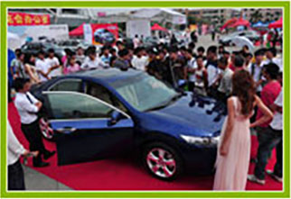
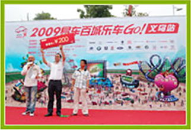

选购橱柜技巧
1、橱柜台面大比拼，教您挑选适合的橱柜台面？
台面是橱柜最引人注目的“面子”，因此，选购时应多费心思。目前市场上最常见的
台面材质主要有四种：天然石、人造石、耐火板、不锈钢，下面我们对这四种材质的
台面的优缺点进行比较，相信会对你的橱柜选购有所帮助!
2、橱柜定做八部曲
签订订单——预约时间——设计厨房——设计橱柜——签订合同——送货安装——验
收检查——售后服务。签订订单：当充分了解了市场，对各橱柜厂家的产品质量、服
务、实力、式样有明确的认识。确定厂家后，要签订一个订单，并预交……
3、成品橱柜的“面子”你了解多少？
成品橱柜越来越受欢迎，那么在选择橱柜的时候，一定要在“面子”上下足功夫，现
在就来看看市场上都有什么样的橱柜门板吧。1.防火板门板：防火板门板多用西德板(厚
度18毫米)双面贴防火板，贴面后封边做成的。作为门板有其他材料无可……
橱柜品牌展示

